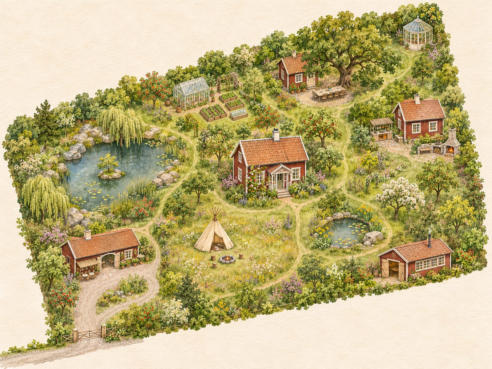
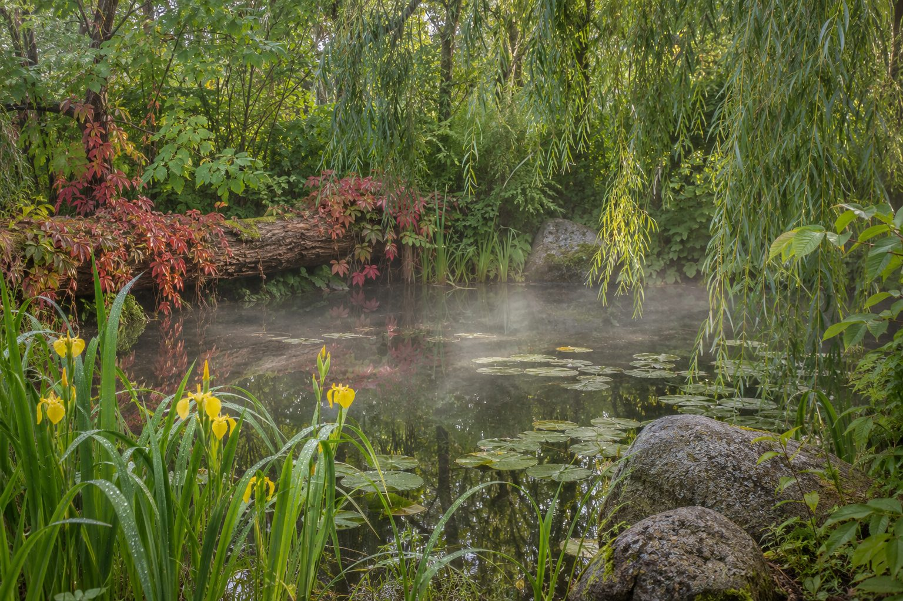

A forest glade that grows richer every year.
A forest garden, a pond, a meadow, workshops and a long table under the oak, on 3,700 square metres in Uppland, Sweden. The place tells you what time of year it is.
Welcome to Vreta.
Plan a visit
Ten places in an enclosed glade
Vreta Solglänta is a closed, green garden surrounded by deciduous woodland and food forest. There is no lake view from the plot; Lake Ekoln, the Dalkarlskärret wetland and Hammarskog manor are walks of their own nearby.
- The forest garden with fruit trees, berries and perennials in layers.
- The pond, small and sheltered by willows, with granite boulders and an old elm log.
- The meadow and the tipi, a circle around the fire for about twelve people.
- The workshops, where reclaimed materials become new things.
- The long table under the oak, the cottage kitchen and the outdoor kitchen.
- The greenhouse, the orangery and the café and shop in the carriage shed at the gate.
The house sleeps twelve, and the tipi gathers the group.

Small groups, by arrangement
Vreta welcomes small groups for courses, retreats, shared meals and overnight stays. Write to us about what you would like to do, and we will suggest a time.
Directions are sent once your visit is confirmed. Dogs are welcome on a lead.
Write to Vreta SolgläntaAbout this site
This site describes Vreta Solglänta, part of Vreta Regenerative Initiative: permaculture, a food forest and reclaimed materials in one living place. The full site, with the calendar, the plates and the eleven books, is in Swedish.
There are no forms and no tracking. What you note on the Swedish pages stays in your own browser.